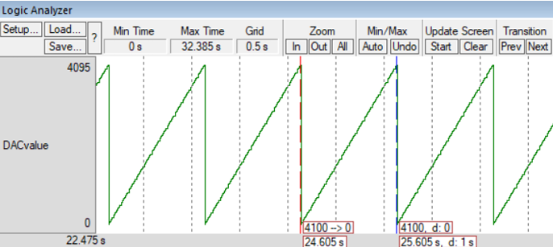

Welcome to my GitHub!
My name is Basil Moledina. I am a recent graduate from Auburn University at Montgomery (Fall 2024). In my spare time, I like to read and listen to music.
I have a wide variety of interests, including but not limited to:
- Assembly Programming
- Embedded Systems
- Operating Systems
- Database Management
- Information Systems
The purpose of this webpage is to showcase some of my favorite projects and achievements that I've had the privelege of working on. It is my belief that nobody deserves to navigate through a messy portfolio. That is why this page includes brief summaries and links to the best projects I have to offer. Please be mindful that as of January 29th, 2025, this webpage is brand new, and I will be adding more projects as time progresses.
Programmable Function Generator
A function generator (FG) is an electronic device that outputs a specific sequence of voltages to produce a desired electric signal. The output voltage at a given moment is determined by the current time and the desired pattern/signal. A programmable function generator(PFG) is simply an FG that offers adjustable settings (i.e. shape, size) to the user, allowing for the generation of more than just one signal. Most often, FPGs are used by engineers and technicians to test and repair various transient circuits and equipment, such as amplifiers.
There are two ways a FPG can be implemented: a hardware-based solution or a software-based solution.